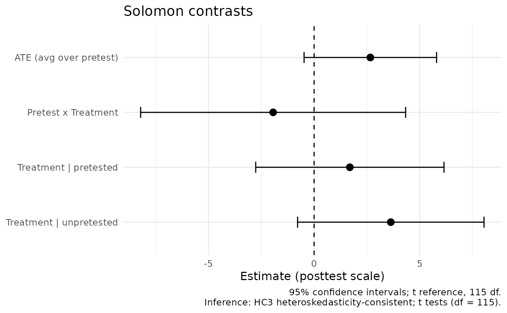
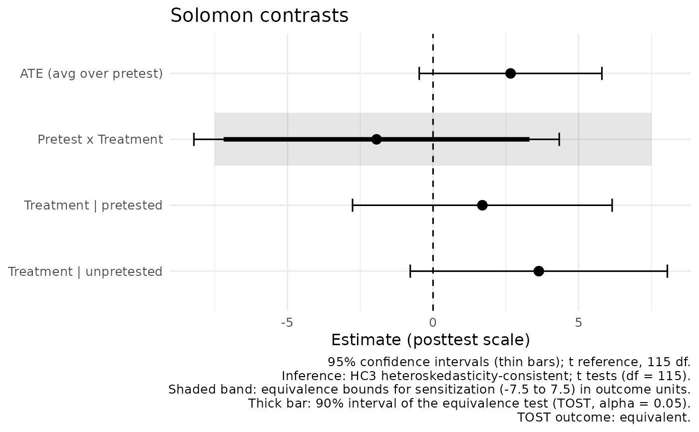
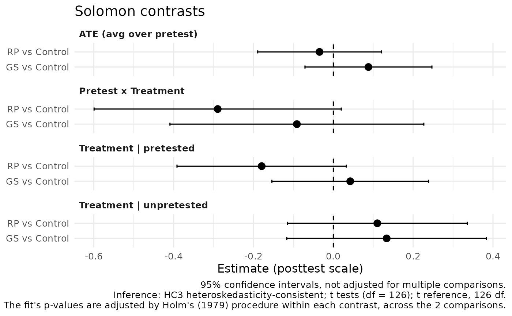

![[Stable]](figures/lifecycle-stable.svg) Plots the four Solomon contrasts from a fitted model: the average
treatment effect across pretest conditions, the Pretest x Treatment
sensitization contrast, and the treatment effects among pretested and
unpretested participants, each with its confidence interval and a
reference line at zero.
Plots the four Solomon contrasts from a fitted model: the average
treatment effect across pretest conditions, the Pretest x Treatment
sensitization contrast, and the treatment effects among pretested and
unpretested participants, each with its confidence interval and a
reference line at zero.
Arguments
- fit
A fit from
fit_solomon_glm(),fit_solomon_ml(),fit_solomon_sem(), orfit_solomon_sem_latent().- bounds
Optional equivalence bounds for the sensitization contrast, as one positive number or
c(lower, upper), drawn as a shaded band on that row. Use the same bounds asequivalence_solomon(), fixed before the data were examined.
Details
Estimates and intervals are taken unchanged from the fitted object, so the figure agrees with its printed output, and the caption states the confidence level and the reference distribution the model used. Contrasts a model does not estimate are omitted and named in the caption rather than drawn as zero.
Designs with several treatments
For a fit from fit_solomon_glm() with several treatments and a control,
the figure has one panel for each of the four contrasts and one row in
each panel for each comparison, such as "RP vs Control", in the order of
the fit. The intervals are the unadjusted ones the fit reports. The
caption names the adjustment the fit applied to its p-values, by default
Holm's (1979) procedure, and says that the intervals are not adjusted.
With bounds, the band is drawn on every Pretest x Treatment row.
References
Holm, S. (1979). A simple sequentially rejective multiple test procedure. Scandinavian Journal of Statistics, 6(2), 65–70. https://www.jstor.org/stable/4615733
Examples
fit <- with(solomon_example, fit_solomon_glm(y_post, treat, pretested, y_pre))
plot_solomon_effects(fit)

plot_solomon_effects(fit, bounds = 5)

# A six-group design: two treatments and a control.
fit6 <- fit_solomon_glm(post_behavior, condition, pretested, pre_behavior,
control = "Control", data = mai2020)
plot_solomon_effects(fit6)
